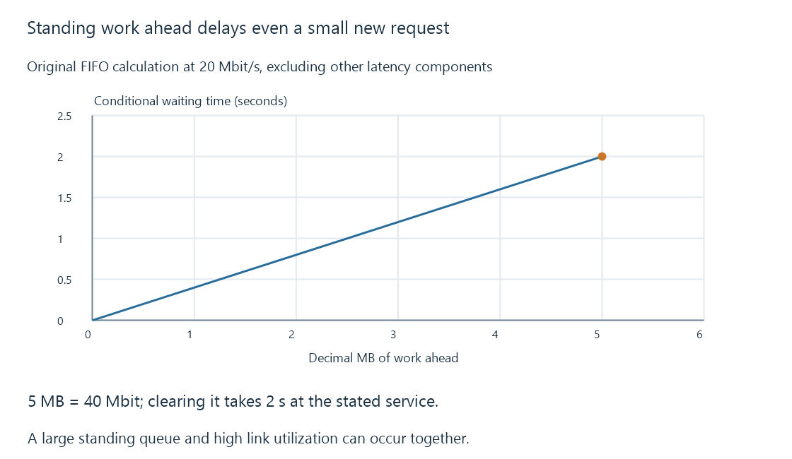

Bufferbloat and standing queue delay
Bufferbloat is excessive standing queue delay under load, where retained work can keep link utilization high while delaying interactive and media-control traffic.
A movie transfer uses most of the link, and opening a small page or seeking suddenly feels slow. The bulk rate can remain high while small requests wait behind a large standing queue.
Bufferbloat describes that excessive queued delay.
Convert bytes ahead into waiting
Use an original FIFO model:
{
"bytesAhead": 5000000,
"serviceMbitPerSecond": 20
}
Five decimal MB is forty Mbit. At twenty-Mbit/s service, clearing that work takes two seconds before other delay components.

A very small new request does not escape the two seconds just because its own serialization needs little time.
Doubling the service to forty would halve the conditional wait. Adding another five MB of queued work would instead double it at the original rate.
A burst and a standing queue have different evidence
An original short sojourn-time sample set is 0.5, 40, 0.8 and 0.6 ms. Another is 40, 50, 45 and 42 ms.
The first trace includes one excursion while returning near a low delay. The second keeps even its minimum at forty ms.
A maximum alone emphasizes the excursion. Evidence about sustained minima/time behavior can distinguish persistent waiting from a brief queue that drains.
These are teaching observations, not a full CoDel decision trace or a real queue measurement.
Reducing every buffer is not the entire design
Useful buffers absorb bursts and rate variation. Removing that capacity indiscriminately can create other losses or underutilization.
Active queue management can signal/drop under its defined policy to control excessive queue behavior. Flow scheduling can keep one bulk flow from monopolizing all queued service.
RFC 8289 and RFC 8290 describe Experimental CoDel/FQ-CoDel designs. Their configured/implemented behavior and the sender’s response determine the actual outcome.
The queue’s location matters
A household router cannot directly manage every queue in an ISP, wireless hop or another client. A shaping arrangement can choose a controlled local service point when its assumptions about the real bottleneck are appropriate.
A changing bottleneck rate or another unobserved queue can defeat a simplistic fixed-rate estimate.
For Emby, smooth buffered presentation and delayed controls can coexist. The former uses already retained media; the latter waits for a new operation’s path.
See Also
- Network congestion and competing arrival rates
- Network latency, delay components and round trips
- Quality of service, classification and scheduling
- Proxy buffering, progress and timeout clocks